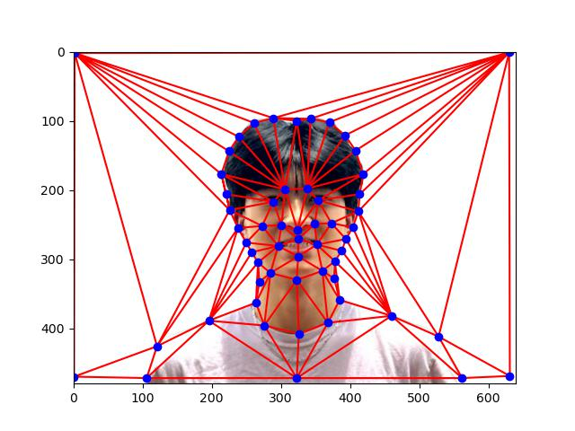
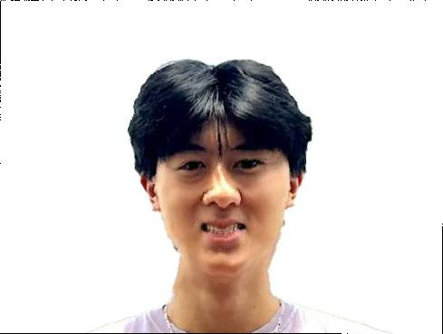
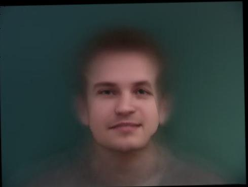
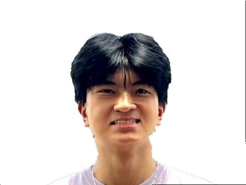

Results
Part 1: Defining Correspondences Operator
First, I needed to align the two images I wanted to morph, and I did this by reusing given code from the previous project. Then I removed the backgrounds with a outside photo-editing tool. I then selected correspondence points between my face and the picture of Lebron I'm using. I did this using the student-made tool found here.
Then, I computed the point-wise mean of the two point sets, and then computed the Delaunay triangulation of the midway shape using scipy.spatial.Delaunay.

Triangulation with Correspondence Points

Triangulation with Correspondence Points
Part 2: Computing the "Mid-way Face"
Then, to find the affine matrix A, I essentially solved a system of equations using np.linalg.lstsq in my computeAffine(tri1, tri2) function. The a, b, c, d, e, f values were then used with a row of [0, 0, 1] to create the transformation matrix T with homogenous coordinates.
The inverse warp function was then created by generating a mask using polygon. I also used a RegularGridInterpolator in order to interpolate color from neighbors in the case of a pixel coming from "between pixels."
Part 3: The Morph Sequence
The morph is similar, except my mean points is recomputed at each step of iteration using the warp_fraction weight to adjust the shape transformation, and the dissolve_fraction to control the values blending.
I iterated over 0-1 at 45 even steps in order to create the gif transition frames, and create the gif. The transition can be seen below:
Part 4: The "Mean face" of a population
I computed the average face of the Danes, which was a bit tricky because I needed to create a special parser in order to identify the correspondence points of each face. With this info, I averaged the position of all of the correspondence points for each image and then morphed each face into the average face points. I then computed the mean of all of these faces to compute the "average" face.
Here are some examples of people in the dataset with their face morphed to the average shape.
I also have examples of my face being morphed into the average face shape, and the average face being morphed into my face shape.

Richard to Average Dane Shape

Average Dane to Richard Shape
Part 5. Caricatures: Extrapolating from the mean
I extrapolated from the Danish population mean in order to create a caricature of my face, and tried it with alphas 1 and -0.7.

Caricature alpha = -0.7

Caricature alpha = 1
Bells & Whistles
For my bells & whistles, I focused on changing my ethnicity to the average Dane similar to the previous part, but with more adjustments including shape, appearance, and both.